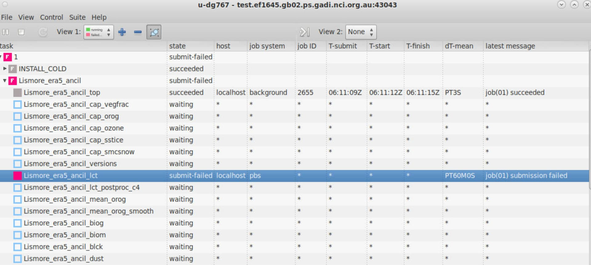

Common rose/cylc problems#
This will be a maintained list of problems encountered (and fixed) with running rose/cylc ACCESS tasks.
Checklist for running rose/cylc#
Before diagnosing any rose/cylc problems, check
You are running
roseon a persistent sessionYour
gadiproject has available compute and storageYour home directory isn’t full.
You have run through all the
rose/cylctutorials.
Cannot run suite - IP and key verification error#
If your rose suite-run command fails with output similar to the following:
[WARN] Warning: the ED25519 host key for '[<your persistent session>]:2222' differs from the key for the IP address ' [<IP address>]:2222'
[WARN] Offending key for IP in <known_hosts files> 1
[WARN] Matching host key in <known_hosts file> 3
[WARN] Exiting, you have requested strict checking.
[WARN] Host key verification failed.
[FAIL] <suite id>: does not appear to be running
You have tried to run a rose suite from a login node. Please try to run the suite again from a persistent session.
Jobs fail to submit.#
If your suite runs, but jobs fail to submit to the PBS queue, your gadi project may not be associated with any compute resources.

In this example, the small jobs sent to the background queue have been submitted and succeeded. The background jobs require no compute resources and run on a gadi login node. These can be simple tasks such as creating a symbolic link between an ancillary file in a central directory to your working directory in ~/cylc-run.
But any other job that requires compute resources will fail, because your default gadi project doesn’t have any compute resources allocated to it. (Some gadi projects are for storage only).
To fix this, change the value of PROJECT in you gadi configuration file to a project that
You have membership of
Has sufficient computational resources available
See here for further information on how to change your default project code on gadi.
Make sure the persistent session you are running is also linked to a project with computational resources.
Jobs submitted but not running#
A common issue is that you start your rose suite, which submits various jobs, but they never run.
i.e. the job state in the cylc GUI is ‘submitted’ and the job colour is bright green, but the job never begins running and never turns deep green.
This is often caused by disk quota issues. If you have insufficient disk space, either in your home directory, your /g/data/ or /scratch directories, your PBS job will not be allowed to run and will be held indefinitely.
PBS jobs will also be held if there are insufficient project allocations (e.g. you’ve run out of ‘kSU’).
See https://opus.nci.org.au/spaces/Help/pages/230490410/Why+are+my+jobs+not+running+…
for more details.
To help manage your disk quota, use some of the commands in this link:
https://opus.nci.org.au/spaces/Help/pages/236880003/Basic+Navigation…
Editing suite files doesn’t update the suite behaviour#
If you are editing files within the rose suite, but these edits aren’t being reflected at runtime, you may have forgotten to reload the suite.
Remember, the rose suite files that you checkout from the central MOSRS repository are stored in your ~/roses/<suite-id> directory.
But the files which control the suite at runtime are located in ~/cylc-run/<suite-id>.
You must execute $ rose suite-run -- reload to update the suite files that control runtime execution.
See here for an example.
Cannot login to a persistent session#
If you can’t login to your persistent session, you may have conflicting modules which don’t use the standard ssh environment at NCI. Often the cause of this conflict is the conda/analysis module developed by CLEX and maintained by ACCESS-NRI. You will have to unload any conflicting modules.
See this link for more information.
Cannot locate files when running a rose/cylc suite#
If you are having trouble accessing files within tasks triggered by a rose/cylc suite, and you can view those files from a standard gadi login session, the problem is likely caused by the persistent sessions having insufficient gadi permissions.
E.g. If you are using a persistent session created before you were a member of the access project, your rose/cylc suite will be unable to locate any files on /g/data/access and hence will fail.
The persistent session can’t automatically update your project permissions. It can only access the projects that were active when it was created.
The solution to this problem is to delete your persistent session and create a new one, after you have joined the access project.
This applies to any new gadi project you have joined. You will have to restart your persistent session for these new project permissions to take effect.